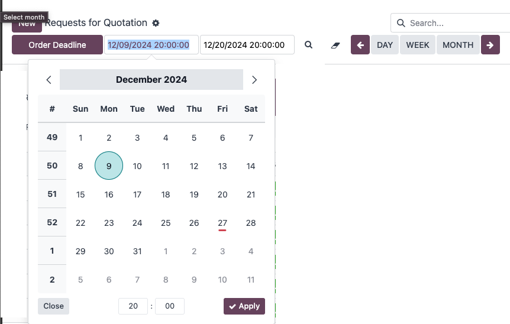

The DatetimeFilter app for Odoo allows you to filter records based on a selected date range. This feature adds a datetime panel to the control panel, where you can easily pick a date range and filter records that fall within that range. This tool is particularly useful for managing records with datetime fields and improving data accessibility within Odoo.

In context actions, you can add the following code to customize the datetime filter:
{default_dt_field: 'sign_date', search_by_field_date: ['sign_date', 'start_date', 'end_date']}
'sign_date').
['sign_date', 'start_date', 'end_date']). If not specified, all
datetime fields will be available for filtering.
By configuring these settings, you can fine-tune how the datetime filter applies to your records, ensuring it works seamlessly with your data structure.
Note: Make sure the selected datetime fields are properly configured in your models for the filter to work correctly. If no datetime fields are provided, the filter will apply to all datetime fields available in the records.